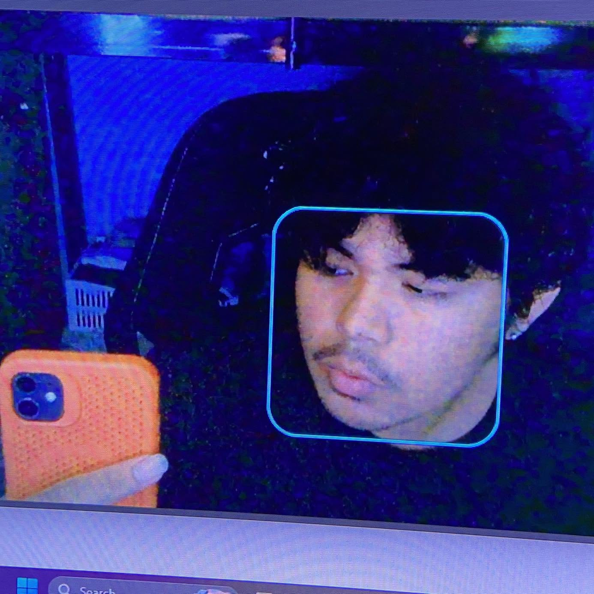

BMOSS – Biometric Motorcycle Security System
IoT-based motorcycle security system using biometric authentication and GSM alerts.
Hello, I’m Jayson Nuñez
IoT and backend developer creating secure device-to-cloud products, intelligent automation, and scalable APIs.

A quick overview of what I do and what I’m currently focusing on.
I’m an IoT and Backend Developer who builds real-world systems—from connected devices and sensor-based solutions to reliable APIs and automation tools. I'm collaborative by nature and creative in approach, combining technical depth with a strong eye for clean design and thoughtful user experience. I thrive working with others, enjoy solving problems from fresh angles, and care deeply about building things that are not just functional, but crafted with intention.
Technologies and tools I use for IoT and backend development.
ESP32, GSM/GPS modules (A9G), AT Commands, Sensors, Serial Communication
Node.js, Express, REST APIs, JWT Authentication, Input Validation
MQTT, HTTP/HTTPS, Firebase, Real-time Data Logging, Webhooks
MySQL / PostgreSQL, Schema Design, Git, GitHub, Postman
Fibre Optic Cabling, LAN Setup & Crimping, Network Troubleshooting, IP Configuration, Linux CLI, Bash Scripting
Selected IoT, robotics, and computer vision projects.
IoT-based motorcycle security system using biometric authentication and GSM alerts.
IoT-powered plastic detection machine integrated with a WiFi vending reward system.
An automated monitoring system designed to support consistent pili seed germination.
A computer vision traffic system that detects vehicles and analyzes road activity in real time.
A robotic system built to inspect drainage channels and help identify potential blockages.
Practical IoT, backend, cybersecurity, and freelance experiences.